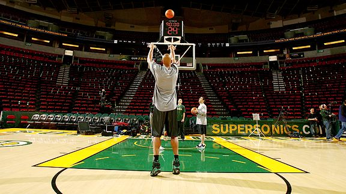

Obszar ograniczony (potocznie: pole trzech sekund lub trumna) – specyficzny obszar boiska znajdujący się na obu połowach boiska do koszykówki, o wymiarach: 5,8 metra na 4,8 metra, natomiast półkole rzutów wolnych ma wysokość 1,8 metra. Kolor linii „trumny” musi być taki sam jak kolor linii autu boiska. Potoczna nazwa „trumna” utrwaliła się, ze względu na dawny wygląd pola 3 sekund, który przypominał trumnę.
